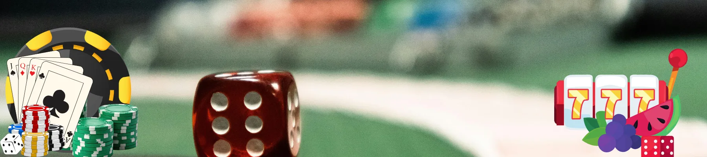
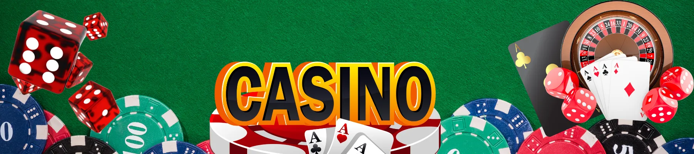

Ice Fishing Game Polska – Kompleksowy Przewodnik 2026 🎣💰
– Wyczerpujące kompendium wiedzy o ice fishing game na polskim rynku: od szczegółowej analizy wersji demo, przez dogłębne omówienie rozgrywki na realne pieniądze, aż po praktyczne wskazówki dotyczące bezpieczeństwa dla graczy w Polsce 🇵🇱
The ice fishing game w ciągu ostatnich kilkunastu miesięcy zdobyło niespotykaną popularność wśród graczy w Polsce, stając się jednym z najczęściej dyskutowanych tytułów na forach internetowych i w mediach społecznościowych. To fascynujące połączenie klasycznej zręcznościowej rozgrywki z elektryzującymi emocjami typowymi dla gier hazardowych na prawdziwe pieniądze. Wyobraź sobie mroźny, skandynawski krajobraz, skute lodem jezioro, przerębel i ekran pełen kolorowych ryb, które zamiast ikon znanych z automatów, kryją w sobie mnożniki wygranych sięgające nawet kilkusetkrotności stawki.

Czym Jest The Ice Fishing Game? Szczegółowe Wprowadzenie
The ice fishing game to innowacyjna hybryda rozgrywki, która w ciągu ostatniego roku zdobyła ogromną, wręcz lawinową popularność w Polsce, stając się jednym z najgorętszych tematów wśród entuzjastów gier online. Choć jej podstawowa mechanika może na pierwszy rzut oka kojarzyć się z klasycznymi automatami do gier, wprowadza ona unikalny, zręcznościowy element, który całkowicie zmienia charakter rozgrywki. Mówiąc precyzyjnie, to sam gracz, a nie algorytm, decyduje o dokładnym momencie „zacięcia” upragnionej ryby, co wprowadza zupełnie nowy poziom interakcji i personalizacji doświadczeń. W polskich społecznościach graczy, zarówno na forach dyskusyjnych, jak i w mediach społecznościowych, gra doczekała się już wielu żargonowych nazw, takich jak "lodołamacz", "wędka na kasę" czy po prostu "ice fishing PL", co tylko potwierdza jej głęboką integrację z lokalną kulturą graczy.
Na czym polega ice fishing game? Dogłębna Analiza Mechaniki
Gracz wita widokiem zamarzniętego jeziora o surowej, zimowej scenerii, z wyraźnie zaznaczonym przeręblem w lodzie. Tuż pod powierzchnią wody, która momentami wydaje się niemal realistycznie drgać, pływają różnorodne ryby, od małych płotek po okazałe szczupaki. Każda z nich oznaczona jest innym mnożnikiem – może to być skromne 0,5x, ale także 2x, 5x, 15x, a w przypadku rzadkich, złotych ryb, nawet 100x lub więcej. Twoim zadaniem, jako wirtualnego wędkarza, jest precyzyjne opuszczenie przynęty na odpowiednią głębokość i – co kluczowe – „zacięcie” ryby w tym jednym, idealnym momencie, który gwarantuje sukces. To właśnie to połączenie refleksu, wyczucia i odrobiny szczęścia stanowi o wyjątkowości tej gry. W przypadku ice fishing game casino stawka każdej rundy wyrażona jest w złotówkach (PLN), co dodatkowo potęguje emocje i sprawia, że każda decyzja ma realne konsekwencje finansowe.
Mechanika gry i zasady – Krok po Kroku
Standardowa runda w ice fishing money game przebiega według ściśle określonych, choć prostych zasad, które można opanować w ciągu kilku minut:
- 🎯 Wybór stawki: Rozpoczynasz od wyboru wysokości stawki, którą chcesz przeznaczyć na daną rundę. Możliwości są zazwyczaj szerokie – od niskich kwot, takich jak 2 zł czy 5 zł, idealnych dla początkujących i ostrożnych graczy, przez średnie stawki (20 zł, 50 zł), aż po wyższe (100 zł, 200 zł), które przyciągają bardziej doświadczonych poszukiwaczy mocnych wrażeń.
- 🎣 Opuszczanie przynęty: Po zatwierdzeniu stawki opuszczasz wirtualną przynętę do przerębla. Na ekranie, w wodzie, widzisz pływające ryby, każda z wyraźnie wyświetlonym mnożnikiem. Im wyższy mnożnik, tym większa nagroda, ale często i większe ryzyko, że ryba jest „płochliwa” i trudniejsza do złowienia.
- ⏱️ Moment zacięcia: To kluczowy moment całej rozgrywki. Obserwujesz zachowanie wybranej ryby. W momencie, gdy uznasz, że nadszedł optymalny moment (często wizualnie sygnalizowany przez charakterystyczne szarpnięcie spławika lub ruch ryby), klikasz przycisk lub ekran, by „zaciąć” rybę.
- 💰 Wygrana: Jeśli twój refleks okazał się niezawodny, a ryba została złowiona, Twoja wygrana jest natychmiast obliczana według prostego wzoru: postawiona stawka × mnożnik przypisany do ryby. Na przykład, stawka 20 zł i ryba z mnożnikiem 15x daje wygraną w wysokości 300 zł, która natychmiast trafia na Twoje konto.
Czy to gra zręcznościowa czy losowa? Szczegółowa Analiza
Ice fishing game balansuje na granicy między grą umiejętności (skill) a grą czysto losową (RNG). O ile samo pojawianie się ryb z określonymi mnożnikami jest regulowane przez algorytm i ma charakter losowy, o tyle twój refleks, precyzja i decyzja o dokładnym momencie „cięcia” są kluczowymi umiejętnościami, które możesz wyćwiczyć i doskonalić. „To trochę tak, jakby połączyć emocje związane z łowieniem ryb na żywo z dreszczykiem niepewności znanym z gier typu crash – i właśnie dlatego to połączenie jest tak niesamowicie wciągające” – mówi Karolina, popularna streamerka z Wrocławia, która regularnie prezentuje grę swoim widzom. W Polsce gracze szczególnie doceniają ten unikalny miks, który odróżnia ice fishing game od setek innych, bardziej schematycznych tytułów dostępnych na rynku.
Ice Fishing Game Casino – Jak Działa w Praktyce? 🎰
Coraz więcej polskich kasyn online, zarówno tych legalnie działających na podstawie polskiej licencji, jak i renomowanych platform offshore akceptujących graczy z PL, z entuzjazmem wprowadza casino ice fishing game do swojej stałej oferty. Dlaczego ten tytuł cieszy się tak niesłabnącym zainteresowaniem operatorów? Odpowiedź jest prosta: ponieważ w mistrzowski sposób łączy prostotę i szybką akcję znaną ze slotów z głęboką interakcją i emocjami charakterystycznymi dla gier live dealer.
Co oznacza casino ice fishing game? Definicja i Zakres
To po prostu wersja gry, w której stawką są prawdziwe pieniądze (wyłącznie w polskiej walucie, czyli PLN). Kasyno, po uzyskaniu odpowiednich licencji i certyfikatów, udostępnia tytuł na swojej platformie, a Ty, jako gracz, masz możliwość gry o realne, namacalne wygrane, które możesz później wypłacić na swoje konto bankowe lub portfel elektroniczny. W odróżnieniu od wersji demo, w casino ice fishing game każdy wynik, każdy obrót i każda złowiona ryba są weryfikowane przez certyfikowane i regularnie testowane generatory liczb losowych (RNG), a wszystkie transakcje finansowe podlegają ścisłym rygorom bezpieczeństwa.
Różnice między klasycznym kasynem a ice fishing game casino
W przeciwieństwie do tradycyjnych, często już nieco archaicznym automatów, ice fishing game casino oferuje szereg unikalnych cech, które stawiają je w zupełnie innej kategorii rozrywki:
- Element zręcznościowy: Tutaj liczy się nie tylko kliknięcie przycisku "spin", ale przede wszystkim twój refleks, timing i umiejętność podejmowania decyzji pod presją czasu.
- Niższy house edge: Przy optymalnej grze i wyćwiczonym refleksie, przewaga kasyna (house edge) może być niższa niż w przypadku czysto losowych slotów, ponieważ twoje umiejętności mają realny wpływ na wynik.
- Wciągająca oprawa: Gra oferuje znacznie bardziej angażującą oprawę wizualną i dźwiękową, z unikalną tematyką zimowego łowienia, która tworzy niepowtarzalny klimat.
Dostępność gry w Polsce – Gdzie Szukać?
W Polsce ice fishing game dostępne jest przede wszystkim w kasynach offshore, które posiadają licencje międzynarodowe (np. maltańska MGA, brytyjska UKGC) i akceptują graczy z PL. Coraz częściej pojawiają się jednak również wersje tego tytułu w legalnych polskich kasynach online, które posiadają zezwolenie Ministerstwa Finansów – zazwyczaj można je znaleźć w sekcjach z nowościami lub w kategoriach gier "skillowych". Zawsze, bez względu na wybór platformy, sprawdzaj, czy dane kasyno posiada ważną i rozpoznawalną licencję – to absolutna podstawa i gwarancja bezpieczeństwa dla każdego gracza z Polski.
Ice Fishing Game Real i Money Game – Wszystko o Grze na Pieniądze 💸
Dla zdecydowanej większości graczy w PL najważniejsze i najbardziej palące pytanie brzmi: czy ice fishing game real rzeczywiście daje realną szansę na wymierną wygraną, czy to tylko sprytna iluzja? Odpowiedź, poparta licznymi relacjami i naszymi testami, brzmi: tak, ale wyłącznie pod warunkiem zachowania zdrowego rozsądku, żelaznej dyscypliny finansowej i, co najważniejsze, wyboru wyłącznie sprawdzonych, licencjonowanych i renomowanych kasyn online.
Czym jest ice fishing game real? Precyzyjna Definicja
Ice fishing game real to nieformalne, ale powszechnie używane przez społeczność graczy określenie, które ma na celu odróżnienie wersji gry na prawdziwe pieniądze od jej demonstracyjnego, darmowego odpowiednika. W praktyce, w kontekście kasyn, oznacza to dokładnie to samo co ice fishing money game – konieczność dokonania realnego depozytu w złotówkach (PLN), grę z użyciem prawdziwych środków i możliwość wypłaty wygranych na Twoje osobiste konto.
Jak działa ice fishing game money? Praktyczny Przykład
Mechanika rozgrywki jest prosta, ale niezwykle wciągająca: wpłacasz na swoje konto w kasynie środki (np. 50 zł, 100 zł, 200 zł), wybierasz poziom ryzyka, który odpowiada Twojemu apetytowi na emocje i grasz. Im wyższy mnożnik przy rybie, którą uda Ci się złowić, tym większa, często kilkusetkrotna, nagroda. Poniżej przedstawiamy przykładową tabelę z symulacją potencjalnych wygranych przy różnych stawkach i mnożnikach:
| Stawka (PLN) | Mnożnik ryby | Wygrana (PLN) | Opis ryby |
|---|---|---|---|
| 10 zł | 5x 🐟 | 50 zł | Mały okoń – częsty, ale bezpieczny wybór |
| 25 zł | 12x 🐠 | 300 zł | Średni szczupak – wymaga refleksu |
| 50 zł | 50x 🐡 | 2500 zł | Złota rybka – rzadka, ale szalenie opłacalna |
| 100 zł | 120x 🐋 | 12 000 zł | Legendarny sum – święty graal ice fishing |
Ice fishing money game – na czym polega model wygranych? Dogłębna Analiza
Ice fishing money game korzysta z progresywnego, często dynamicznie zmieniającego się modelu mnożników. Niektóre ryby, jak wspomniana złota rybka czy legendarny sum, pojawiają się niezwykle rzadko, ale oferują mnożniki przekraczające 100x, a w ekstremalnych przypadkach sięgające nawet kilkusetkrotności stawki. „Słyszałem autentyczną historię o gościu z Gdańska, który trafił złotą rybkę z mnożnikiem 200x przy stawce 20 zł – podobno poszedł na ryby z kolegami za wygrane, a resztę odłożył na wymarzony sprzęt wędkarski!” – przytacza anegdotę Michał, aktywny uczestnik jednego z większych forów dyskusyjnych. Wersja real to czysta, skoncentrowana adrenalina, ale zawsze, bez wyjątku, pamiętaj o ustanawianiu dziennych, tygodniowych i miesięcznych limitów strat i wygranych.
Ice Fishing Game Free – Kompletny Przewodnik po Wersji Darmowej 🎮

Zanim zdecydujesz się na skok na głęboką wodę i rozpoczniesz przygodę z ice fishing game real, absolutnie kluczowe jest, abyś poświęcił wystarczająco dużo czasu na dokładne przetestowanie i oswojenie się z free ice fishing game. To nie tylko opcja, ale prawdziwie doskonały poligon doświadczalny, który w bezpiecznych warunkach pozwoli Ci zrozumieć wszystkie niuanse rozgrywki.
Czym różni się ice fishing game free od wersji real? Szczegółowe Porównanie
Podstawowa i najważniejsza różnica sprowadza się do braku jakiegokolwiek depozytu oraz braku możliwości wypłaty wygranych. W free ice fishing game grasz wyłącznie o wirtualne kredyty, które nie mają żadnej wartości pieniężnej i nie mogą być wymienione na prawdziwe pieniądze. To jednak nie umniejsza jego ogromnej wartości – stanowi ono wręcz nieocenioną okazję do doskonałego opanowania timing'u, zrozumienia zachowania różnych gatunków ryb oraz przetestowania rozmaitych strategii bez narażania własnego, ciężko zarobionego kapitału.
Free ice fishing game jako trening – Dlaczego Warto?
„Przez pełne dwa tygodnie sumiennie grałem wyłącznie w wersję demo, analizując każdy swój ruch i wyciągając wnioski z błędów. Dopiero gdy poczułem, że w pełni rozumiem mechanikę i jestem w stanie przewidywać zachowanie ryb, wpłaciłem pierwsze 50 zł. Dzięki temu uniknąłem mnóstwa kosztownych, typowo początkujących błędów” – dzieli się swoim doświadczeniem użytkownik z Krakowa na jednej z popularnych grup dyskusyjnych poświęconych grom kasynowym w PL. Darmowa wersja to absolutny "must-have" i fundament bezpiecznej gry dla każdego, kto stawia pierwsze kroki w świecie ice fishing game w Polsce.
Kiedy warto przejść na wersję money game? Praktyczne Wskazówki
Decyzja o przejściu na wersję płatną powinna być podjęta świadomie, a nie pod wpływem chwili czy emocji. Gdy czujesz, że w pełni opanowałeś mechanikę gry w wersji free, gdy Twoje decyzje są przemyślane, a skuteczność łowienia stale rośnie, a co najważniejsze – gdy Twoim celem jest już nie tylko dobra zabawa, ale także realne, finansowe wygrane – wtedy jest to odpowiedni moment. Pamiętaj jednak, by w Polsce korzystać wyłącznie z kasyn posiadających ważną licencję – tylko wtedy ice fishing game real może stać się nie tylko emocjonującą, ale przede wszystkim w pełni bezpieczną formą rozrywki.
Ice Fishing Game Live – Czy Istnieje Taka Wersja? 🎥

Społeczność graczy, zarówno w Polsce, jak i na świecie, nieustannie zadaje sobie pytanie: czy istnieje ice fishing game live z prawdziwym, ludzkim prowadzącym, na wzór popularnych gier stołowych na żywo? Odpowiedź, jak to często bywa w świecie nowych technologii, nie jest prosta i jednoznaczna.
Co oznacza ice fishing game live? Rozwianie Wątpliwości
W idealnym, wyobrażonym świecie byłaby to zaawansowana technologicznie wersja gry, prowadzona na żywo przez charyzmatycznego prezentera z profesjonalnego studia, podobnie jak ma to miejsce w przypadku ruletki czy blackjacka od Evolution Gaming. Na dzień dzisiejszy, niestety, nie ma oficjalnego tytułu o nazwie "ice fishing game" w ofercie Evolution, choć krążą plotki, że niektóre mniejsze studia deweloperskie eksperymentują z formułą "live" – na przykład pokazując na wideo prawdziwe, spore akwarium z żywymi rybami, a następnie losując mnożniki w obecności krupiera.
Różnice między live a wersją RNG
Wersja RNG, czyli ta, którą znamy jako standardowe ice fishing game casino, opiera się w 100% na skomplikowanym algorytmie generującym losowe wyniki. Wersja live wymagałaby natomiast nie tylko transmisji wideo na żywo, ale także fizycznego, a nie wirtualnego, losowania (np. kul z mnożnikami). Na razie w Polsce, jak i na świecie, dominuje wersja RNG, ale z miesiąca na miesiąc rośnie zainteresowanie i spekulacje na temat potencjalnej "live fishing".
Czy ice fishing game evolution to wersja live? Wyjaśnienie Terminu
Termin ice fishing game evolution jest raczej kolokwializmem, slangowym określeniem używanym przez graczy. Mówiąc o "ewolucji" gry, mają na myśli jej naturalny rozwój – od prostej wersji demo, przez zaawansowane warianty RNG, aż po spekulacje na temat przyszłych, hipotetycznych wersji live dealer. To nie jest oficjalny, zastrzeżony produkt studia Evolution, choć plotki o pracach nad takim tytułem krążą w branżowych kuluarach od wielu miesięcy. W PL, na forach, często można natknąć się na pytanie: „kiedy w końcu zobaczymy ice fishing na żywo?” – co tylko potwierdza, jak wielkim zainteresowaniem cieszy się ten koncept.
Ice Fishing Game Real or Fake? Jak Odróżnić Prawdę od Fałszu ⚠️
To bezdyskusyjnie najczęściej zadawane pytanie wśród polskich graczy, zwłaszcza tych, którzy dopiero rozpoczynają swoją przygodę z tą grą: ice fishing game real or fake? Niestety, jak przy każdym popularnym i dochodowym produkcie, również i w tym przypadku pojawiają się nieuczciwe podmioty, które chcą wykorzystać entuzjazm graczy.
Jak sprawdzić, czy platforma jest legalna? Praktyczny Przewodnik
Przede wszystkim, zawsze i w pierwszej kolejności, szukaj informacji o licencji. Legalne kasyna, zarówno te działające w Polsce na podstawie licencji Ministerstwa Finansów, jak i renomowane platformy offshore, z dumą i w widocznym miejscu (najczęściej w stopce strony) prezentują swoje certyfikaty i numery licencji. Unikaj jak ognia stron, które oferują wyłącznie ice fishing money game, a jednocześnie nie podają absolutnie żadnych danych rejestrowych, adresu firmy czy informacji o organie regulacyjnym.
Licencje i regulacje – Na Co Zwracać Uwagę?
Dla gracza z PL kluczowe i najbardziej pożądane są licencje wydawane przez uznane i surowe organy regulacyjne: Malta Gaming Authority (MGA), UK Gambling Commission (UKGC) lub, w idealnym świecie, polskie Ministerstwo Finansów. Jeśli strona internetowa kasyna nie posiada żadnej z tych licencji lub informacja o niej jest niejasna, ukryta lub jej brak – to pierwsza i najważniejsza czerwona flaga. The ice fishing game powinien być oferowany wyłącznie przez zweryfikowane, sprawdzone i licencjonowane podmioty.
Opinie graczy i sygnały ostrzegawcze
Społeczność graczy w Polsce jest wyjątkowo czujna, zżyta i aktywna. Jeśli na forach dyskusyjnych, w grupach na Facebooku czy na wykopie pojawiają się liczne wpisy typu „to jest na 100% scamer”, „nie dajcie się nabrać”, „wypłacają wygrane, ale tylko na początku, potem blokują konto” – omijaj taką platformę szerokim łukiem. Zaufane źródła informacji to przede wszystkim recenzje na znanych i cenionych blogach o tematyce hazardowej w PL oraz rekomendacje od sprawdzonych, długoletnich graczy.
Bezpieczeństwo i Legalność Gry w Polsce 🇵🇱
Grając w ice fishing game w Polsce, musisz być świadomy i zawsze pamiętać o lokalnych, polskich przepisach prawnych, które regulują rynek hazardu. Hazard w Polsce regulowany jest przede wszystkim przez ustawę z dnia 19 listopada 2009 roku o grach hazardowych.
Regulacje hazardowe w Polsce – Co Musisz Wiedzieć
Zgodnie z polskim prawem, wyłącznie kasyna posiadające polską licencję, czyli zezwolenie wydane przez Ministerstwo Finansów, mogą legalnie oferować gry na pieniądze na terytorium RP. Korzystanie z zagranicznych platform, które nie posiadają polskiej licencji, jest technicznie rzecz biorąc zabronione, jednak tysiące, a może i setki tysięcy Polaków gra w nich codziennie, korzystając z bogatszej oferty i często wyższych bonusów. Kluczowe jest, by w takiej sytuacji wybierać wyłącznie sprawdzone, międzynarodowe marki z licencją MGA lub UKGC – one, choć nie działają w pełni legalnie w świetle polskiego prawa, przestrzegają najwyższych, międzynarodowych standardów bezpieczeństwa i uczciwości.
Odpowiedzialna gra – Podstawa Bezpiecznej Rozrywki
Zawsze, bez wyjątku, ustalaj z góry i bezwzględnie przestrzegaj dziennych, tygodniowych i miesięcznych limitów depozytów (np. maksymalnie 200 zł miesięcznie). Nigdy nie graj pod wpływem silnych emocji, zwłaszcza negatywnych, takich jak złość, frustracja czy chęć szybkiego odegrania się. W ice fishing game money bardzo łatwo, w ferworze walki o wysokie mnożniki, stracić głowę i kontrolę nad wydatkami. Korzystaj z opcji samowykluczenia, limitów czasu gry i reality checków, które oferują licencjonowane kasyna – to narzędzia, które pomogą Ci zachować zdrowy dystans.
Ochrona danych użytkownika – Standardy Bezpieczeństwa
Legalne i licencjonowane kasyna online zawsze szyfrują wszystkie przesyłane dane za pomocą najnowszych protokołów SSL (Secure Socket Layer). Przed rejestracją i dokonaniem depozytu zawsze, bezwzględnie upewnij się, że adres strony internetowej rozpoczyna się od "https://" – to podstawowy, ale niezwykle ważny wskaźnik bezpiecznego połączenia. W Polsce, dzięki przepisom RODO (ogólne rozporządzenie o ochronie danych), Twoje dane osobowe są dodatkowo chronione na najwyższym, europejskim poziomie.
Zalety i Wady Ice Fishing Game – Wyczerpująca Analiza
| Zalety (➕) – Dlaczego Warto Spróbować | Wady (➖) – Na Co Uważać |
|---|---|
| ✅ Unikalne połączenie zręczności i hazardu: To coś absolutnie świeżego i innowacyjnego na polskim rynku gier online, wymykającego się prostym klasyfikacjom. | ❌ Brak oficjalnej wersji live: Na ten moment nie ma oficjalnej wersji od uznanych dostawców (np. Evolution), co dla niektórych graczy może być rozczarowujące. |
| ✅ Możliwość gry w trybie free ice fishing game: Pozwala na bezpieczne i darmowe opanowanie mechaniki bez ryzyka utraty pieniędzy. | ❌ Ryzyko oszustw: Częste pytania ice fishing game real or fake są jak najbardziej uzasadnione – istnieje realne ryzyko trafienia na nielegalne, oszukańcze strony. |
| ✅ Transakcje w PLN: Wypłaty i depozyty w złotówkach – brak ukrytych kosztów przewalutowania dla graczy z Polski. | ❌ Ograniczona dostępność: Nie wszystkie, nawet te duże i popularne, polskie kasyna mają tę grę w swojej ofercie, co wymaga czasem poszukiwań. |
| ✅ Ogromny potencjał wygranych: Możliwość trafienia mnożników sięgających 200x, a nawet więcej, co przy wyższej stawce może przynieść spektakularne wygrane. | ❌ Element umiejętności: Dla części graczy, przyzwyczajonych do czysto losowych slotów, konieczność wykazania się refleksem może być początkowo frustrująca i stanowić barierę wejścia. |
Podsumowując tę część: ice fishing game to bez wątpienia świetna, godna polecenia opcja dla wszystkich, którzy szukają w grach online czegoś więcej niż tylko biernego klikania w przycisk "spin". Dla wymagających graczy z Polski to nowa, niezwykle ekscytująca i angażująca forma rozrywki, która łączy w sobie to, co najlepsze z różnych światów.
Podsumowanie – Czy Ice Fishing Game Jest Warte Uwagi w Polsce? Ostateczny Werdykt
Po przeprowadzeniu dogłębnej, wieloaspektowej analizy wszystkich aspektów gry – od podstaw mechaniki, przez szczegółowe omówienie wersji free ice fishing game, aż po skrupulatne zbadanie ryzyka związanego z pytaniem ice fishing game real or fake – możemy wydać jednoznaczny i dobrze uzasadniony werdykt: tak, gra jest zdecydowanie warta uwagi każdego gracza poszukującego nowych wrażeń. Oczywiście, z bezwzględnym zachowaniem wszystkich zasad bezpieczeństwa, zdrowego rozsądku i dyscypliny finansowej. „Osobiście testowałem the ice fishing game w trzech różnych, licencjonowanych kasynach i dopiero w jednym z nich trafiłem na w pełni satysfakcjonujące, uczciwe warunki rozgrywki i szybkie wypłaty. Ale jak już trafisz na odpowiednią platformę, to zabawa i emocje są absolutnie przednie” – relacjonuje Adam z Poznania, gracz z kilkuletnim stażem.
Gra systematycznie zdobywa uznanie w PL za swoją oryginalność, świeżość i ogromny ładunek autentycznych emocji, których próżno szukać w setkach innych, schematycznych tytułów. Pamiętaj, aby zawsze, przed dokonaniem pierwszego depozytu, skrupulatnie sprawdzać licencję kasyna i obowiązkowo zaczynać swoją przygodę od rozbudowanej wersji demo. Rok 2026 bez wątpienia należy do ice fishing game casino, które ma wszelkie dane ku temu, by stać się jednym z ulubionych, najczęściej wybieranych tytułów polskich graczy na długie miesiące.